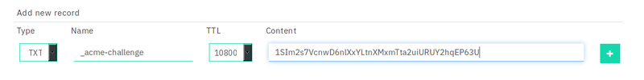

A wildcard certificate are those certs which are valid for *.example.org, meaning you can use this cert for example.org and any subdomain. Whoever they have to be renewed manually.
Creating a openssl config file
We are going to use openssl to create a certificate request. And later we will give it to certbot so it can make a certificate out of that. To do this create a file called openssl.conf with this content:
[ req ]
prompt = no
encrypt_key = no
default_md = sha512
distinguished_name = dname
req_extensions = reqext
[ dname ]
CN = example.org
emailAddress = admin@example.org
[ reqext ]
subjectAltName = DNS:example.org, DNS:*.example.orgopenssl ecparam -genkey -name secp384r1 -out example.org.key
After you have the private key and the openssl.conf key, you have to generate the
certificate request from the private key and the openssl.conf. To do this simply
run: openssl req -new -config openssl.conf -key example.org.key -out csr.pem
Getting the certificate
And this will simply generate the csr.pem file. Now we have to pass it to certbot so we can get the actually signed certificate. Simply run this:
certbot certonly --manual --csr csr.pem --agree-tos --no-bootstrap
--manual-public-ip-logging-ok --preferred-challenges dns-01 --server
https://acme-v02.api.letsencrypt.org/directory
We have used the dns-01 challenge, so you will have to edit the DNS records of your domain to add a new TXT record (like you have done in the Mail server tutorial). Certbot will give you the name of the key (_acme-challenge) and what you have to add. To add them in your records, simply add it like this, the screenshot is from the registrar "njalla". But it will be probably very similar in another registrars
It can also ask you to add 2 _acme-challenge records, so just create another one, this is perfectly valid.
Before pressing enter, verify if the records were added succesfully: open another
terminal and run dig +short TXT _acme.challenge.example.org. It
should return the code certbot gave you. If it does. Press enter, and certbot will
generate the certificate key we needed. Certbot will give you the name of the
generated cert (normally "0001_chain.pem"). Rename it to example.org.crt. And
put both example.org.crt and example.org.key somewhere safe
Configuring nginx
To tell nginx to use the new certs, just edit your nginx config file (which could be /etc/nginx/sites-enabled/default). And add something like this:
server {
server_name example.org;
listen 443 ssl;
ssl_certificate_key /path/to/example.org.key;
ssl_certificate /path/to/example.org.crt
}If you have use certbot with the automatic configuration before, just edit the path of the certificates to the path of the new certificates
Notes
You will have to repeat this process every 3 months to renew the certificates!
Contributor: qorg11